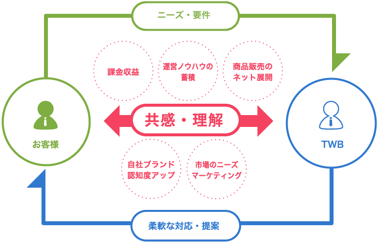
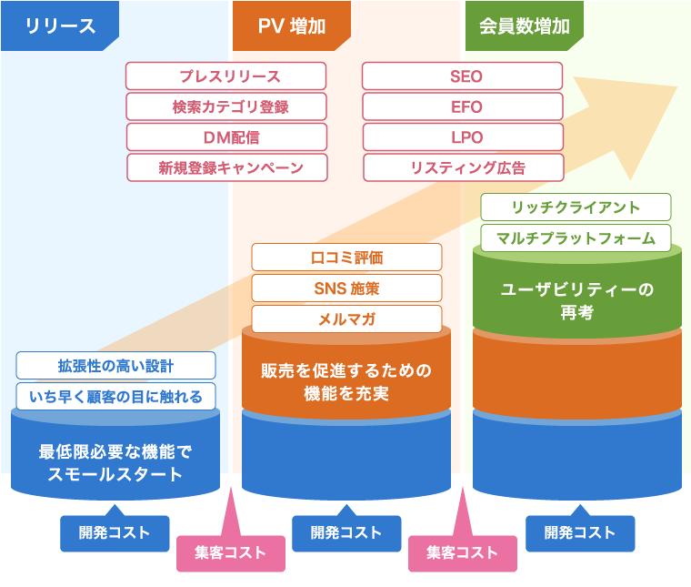
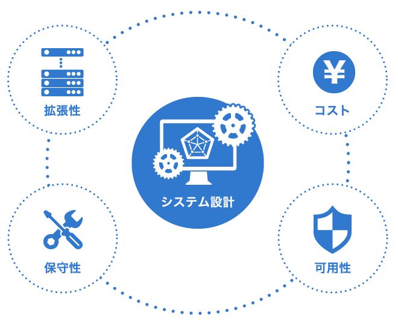

ビジネスモデル、事業戦略、
望の本質の理解・共有と共感
お客様のビジネスモデルとご要望の背景にある意図を理解して、はじめて円滑なコミュニケーションや、
効果的なご提案が可能になります。
お客様のビジネスゴールを理解し、共感することによって、ご要望の本質にお応えできるよう、柔軟かつ
迅速な対応とご提案をさせていただくことが弊社のポリシーです。

スモールスタート＆クイックウィン
－コストバランスを測った段階的なサイト拡張－
リリース当初に大きな設計をして資金を準備し、導入するのには様々なリスクが考えられます。最低限の
機能から始めて徐々に拡張する方法であれば、予算計画も立てやすく、常にその時代に合わせたサービス
展開が可能です。
段階的に、会員数・ＰＶなどの目標を設定し、素早く成果をあげていく。開発と集客のコストバランスを
測りながら、サービスを強化・拡張していくという進め方をご提案いたします。

拡張性の高いシステム設計
サイトの段階的なサービス拡張を、コストパフォーマンスよく行うためには、それを見据えた拡張性の高
いシステム設計、インフラ構成が重要です。
弊社では、常に先を見据えた、拡張性の高いサイト構成、システム設計、サーバ構成をご提案します。
